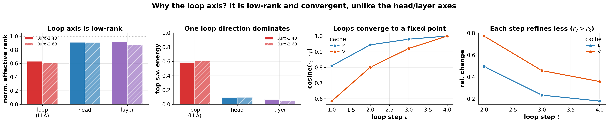

Why it matters왜 중요한가
Weight tying was sold as a parameter win. At serving time it quietly moves the bill to the KV cache — and this paper argues that is not a bug to patch but the exact place where the redundancy lives.
weight tying은 파라미터 절감으로 팔렸다. 그런데 서빙 시점에는 그 비용이 조용히 KV 캐시로 옮겨간다. 이 논문은 그것이 땜질할 버그가 아니라, 바로 그 자리에 중복이 있다고 말한다.
Looped, weight-tied models (Universal Transformers, and recently Ouro/LoopLM and Huginn) reuse one block for several recurrence steps to get depth without parameters. But every recurrence step recomputes attention and writes its own keys and values, so the cache is indexed by loop in addition to layer, head and token. Ouro-1.4B stores 768 KiB per token — at 1M context that is 768 GiB of cache for a 1.4B model. The parameter saving is real and the serving saving is negative.
looped·weight-tied 모델(Universal Transformer, 그리고 최근의 Ouro/LoopLM, Huginn)은 블록 하나를 여러 recurrence step에 재사용해 파라미터 없이 깊이를 얻는다. 하지만 매 step이 어텐션을 다시 계산하고 자기 몫의 key·value를 쓰기 때문에, 캐시는 층·헤드·토큰에 더해 loop로도 인덱싱된다. Ouro-1.4B는 토큰당 768 KiB를 저장한다. 1M 컨텍스트에서는 1.4B 모델 하나에 캐시가 768 GiB다. 파라미터 절감은 진짜지만 서빙 절감은 마이너스다.
The paper's move is to stop treating the loop axis as an accident of implementation and start measuring it. Because the same weights produce all T steps, the resulting states are untied but not independent — and the spectra say so. That single measurement is what turns a serving liability into a design lever, and it is why the rest of the paper is a codec rather than an architecture.
논문의 수는 loop 축을 구현상의 사고로 취급하기를 그만두고 직접 재보는 것이다. 같은 가중치가 T개 step을 모두 만들어내므로, 그 상태들은 서로 묶여 있지 않을 뿐 독립적이지도 않다. 스펙트럼이 그렇게 말한다. 바로 이 한 번의 측정이 서빙의 부채를 설계의 지렛대로 바꾼다. 그리고 그것이 이 논문의 나머지가 새 아키텍처가 아니라 코덱인 이유다.

By the numbers핵심 숫자
The experiment that carries the paper논문을 지탱하는 실험
| Method (axis) | ρ | train-KL ↓ | GSM8K ↑ | MC-avg ↑ |
|---|---|---|---|---|
| teacher | 1× | n/a | 0.794 | 0.646 |
| LLA (loop) | 4× | 0.059 | 0.800 | 0.640 |
| kv_quant (precision) | 4× | n/a | 0.702 | 0.645 |
| cla (layer) | 4× | 0.267 | 0.660 | 0.597 |
| mla_head (head) | 4× | 0.122 | 0.522 | 0.585 |
| final-loop reuse (control) | 4× | n/a | 0.000 | 0.443 |
| LLA (loop) | 21.3× | 0.128 | 0.740 | 0.622 |
In one diagram한 장의 그림
The three ideas세 가지 아이디어
The loop axis is the soft one
Rather than assuming redundancy, the paper measures it on frozen teacher activations across three candidate axes. The loop axis comes back with a normalized effective rank near 0.61 and one direction carrying ~60% of the energy; head and layer stay near full rank. That asymmetry is the entire justification for what follows, and it reproduces on Huginn-3.5B with 32 loops — a different architecture family — which argues it is a property of weight-tied iteration rather than an Ouro artifact.
중복이 있다고 가정하는 대신, 동결된 teacher의 활성값에서 세 후보 축을 직접 잰다. loop 축은 정규화 effective rank 약 0.61에 한 방향이 에너지의 약 60%를 가져가는 반면, head·layer는 거의 full rank로 남는다. 이 비대칭이 뒤따르는 모든 것의 근거이며, 다른 계열 아키텍처인 Huginn-3.5B(loop 32개)에서도 재현된다. Ouro만의 특성이 아니라 weight-tied 반복 자체의 성질이라는 뜻이다.
One latent in, T vectors out
Stack the T per-loop vectors for a fixed token/layer/head into x ∈ ℝTd_head, center it with a calibration mean μ, and project down to c ∈ ℝr. Each loop gets its own up-projection Wup,t. K and V are compressed separately with different ranks — 96 and 160 at 4× — because the diagnosis said V converges more slowly, and the asymmetric split beats a shared 128/128 rank at identical cost (KL 0.105 vs 0.129). The latent is fit pre-RoPE, so rotary phase is applied after reconstruction; in a looped decoder a token holds the same position at every step, which makes this simpler than standard MLA.
토큰·층·헤드를 고정하고 T개 loop 벡터를 x ∈ ℝTd_head로 쌓은 뒤, 캘리브레이션 평균 μ로 중심화하고 c ∈ ℝr로 내린다. loop마다 자기 up-projection Wup,t를 갖는다. K와 V는 다른 rank로 따로 압축된다(4×에서 96과 160). 진단에서 V가 더 느리게 수렴한다고 나왔기 때문이고, 실제로 이 비대칭 분할이 같은 비용의 공유 rank 128/128보다 낫다(KL 0.105 vs 0.129). 잠재는 pre-RoPE에 맞춰 적합되어 rotary 위상은 복원 후에 적용된다. looped 디코더에서는 한 토큰이 매 step 같은 위치를 갖기 때문에, 표준 MLA보다 이 부분이 단순해진다.
SVD first, then on-policy
Wdown is initialized from the top-r right singular vectors of the centered stacked-loop matrix, then only codec parameters are fine-tuned against the frozen teacher with forward KL plus an attention-output matching term. SVD initialization is the single most load-bearing choice: random init gives held-out KL 0.771 against SVD's 0.105. A second stage then refines on the codec's own sampled prefixes, which is what keeps long rollouts from falling apart.
Wdown은 중심화된 stacked-loop 행렬의 상위 r개 우특이벡터로 초기화하고, 이후 코덱 파라미터만 동결 teacher에 대해 forward KL과 어텐션 출력 매칭 항으로 미세조정한다. SVD 초기화가 가장 하중을 많이 받는 선택이다. 랜덤 초기화의 held-out KL은 0.771, SVD는 0.105다. 이어지는 2단계는 코덱이 스스로 샘플링한 접두사로 다듬는데, 긴 롤아웃이 무너지지 않게 지켜주는 것이 이 단계다.
Exposure bias shows up as blank answers
Teacher-forced distillation looks fine on short metrics and then degrades as generations get longer — on MATH-500 the compressed model's no-answer rate spikes to 21%, i.e. it stops terminating properly rather than answering wrongly. Refining on student-generated prefixes lifts MATH-500 from 0.43 to 0.66 at 4× and drops no-answer to 6%. Worth noting as a general lesson: a KV codec evaluated only teacher-forced can hide a length-dependent failure entirely.
teacher-forced 증류는 짧은 지표에서는 멀쩡해 보이다가 생성이 길어질수록 무너진다. MATH-500에서 압축 모델의 무응답 비율이 21%까지 치솟는다. 틀린 답을 내는 게 아니라 제대로 종료하지 못한다는 뜻이다. student가 생성한 접두사로 다듬으면 4×에서 MATH-500이 0.43 → 0.66으로 오르고 무응답은 6%로 떨어진다. 일반 교훈으로 새길 만하다. teacher-forced로만 평가한 KV 코덱은 길이 의존적 실패를 통째로 감출 수 있다.
How it works어떻게 작동하나
- Profile the frozen teacher. 동결 teacher를 프로파일링한다. Collect K/V activations on a calibration set and compare normalized effective rank along the loop, head and layer axes. Only proceed on the axis that is actually low-rank.캘리브레이션 세트에서 K/V 활성값을 모아 loop·head·layer 축의 정규화 effective rank를 비교한다. 실제로 저랭크인 축에서만 진행한다.
- Initialize by SVD. SVD로 초기화한다. For each layer/head/axis, take the top-r right singular vectors of the centered stacked-loop matrix as Wdown, and the matching loop slices as the initial Wup,t. On Huginn-3.5B this alone is near-lossless to 32×, with no training at all.층·헤드·축마다 중심화된 stacked-loop 행렬의 상위 r개 우특이벡터를 Wdown으로, 대응하는 loop 슬라이스를 초기 Wup,t로 삼는다. Huginn-3.5B에서는 학습 없이 이것만으로 32×까지 거의 무손실이다.
- Distill the codec, freeze the model. 코덱만 증류하고 모델은 동결한다. Minimize forward KL between teacher and swapped-model logits plus an attention-output matching term (λattn = 0.5). Only Wdown, Wup,t and μ move — the teacher's weights never do.teacher와 교체 모델 로짓 사이의 forward KL에 어텐션 출력 매칭 항(λattn = 0.5)을 더해 최소화한다. 움직이는 것은 Wdown, Wup,t, μ뿐이고 teacher 가중치는 건드리지 않는다.
- Refine on-policy for long generation. 긴 생성을 위해 on-policy로 다듬는다. Sample prefixes from the compressed model itself, have the frozen teacher score them, and minimize KL with gradients stopped through sampling. This is what removes the length-dependent collapse.압축 모델 자신이 접두사를 샘플링하게 하고, 동결 teacher가 채점하며, 샘플링을 통과하는 기울기는 끊은 채 KL을 최소화한다. 길이 의존적 붕괴를 없애는 단계가 바로 이것이다.
- Pick a decode path at serving time. 서빙 시점에 디코드 경로를 고른다. Either cache reconstructed K/V (1.16× teacher latency, no memory saving) or cache only latents and reconstruct on read (the full ρ× memory saving, but reconstruction-compute-bound). The two do not currently coexist.복원된 K/V를 캐시하거나(teacher 대비 1.16× 지연, 메모리 절감 없음), 잠재만 캐시하고 읽을 때 복원하거나(ρ× 메모리 절감을 온전히 얻지만 복원 연산에 묶임) 둘 중 하나다. 현재 이 둘은 공존하지 않는다.
What to take away그래서, 가져갈 것
Before choosing a compression axis, measure the spectra of all of them. The iso-cache table is the real contribution: at an identical 4× budget the choice of axis moves GSM8K from 0.522 to 0.800, which is a larger effect than most method-vs-method comparisons in this literature.
압축 축을 고르기 전에 모든 축의 스펙트럼을 재라. 진짜 기여는 iso-cache 표다. 동일한 4× 예산에서 축 선택만으로 GSM8K가 0.522에서 0.800까지 움직인다. 이 분야의 웬만한 방법 대 방법 비교보다 큰 효과다.
Low-rank does not mean collapsible. The zero-parameter "final-loop reuse" control gets the same 4× for free and scores 0.000 on GSM8K. Including a control that should work if your structural story were slightly wrong is the cheapest way to make a mechanism claim credible.
저랭크라는 말이 접을 수 있다는 뜻은 아니다. 파라미터 0짜리 "final-loop reuse" 대조군은 같은 4×를 공짜로 얻고 GSM8K 0.000을 받는다. 당신의 구조적 설명이 조금만 틀렸다면 작동했어야 할 대조군을 넣는 것이, 메커니즘 주장을 신뢰하게 만드는 가장 값싼 방법이다.
Evaluate KV compression under autoregressive rollout, not just teacher forcing. The off-policy codec's failure showed up as a 21% no-answer rate that only appears at length — a metric most KV-cache papers never report.
KV 압축은 teacher forcing이 아니라 자기회귀 롤아웃에서 평가하라. off-policy 코덱의 실패는 길이가 길어져야 드러나는 21% 무응답률로 나타났다. 대부분의 KV 캐시 논문이 아예 보고하지 않는 지표다.
The scope is narrower than the framing. This applies to weight-tied looped models — Ouro and Huginn — not to the standard Transformers that most KV-cache work targets. Its value is the method for finding a compressible axis, more than the codec itself.
적용 범위는 서술보다 좁다. 이것은 weight-tied looped 모델(Ouro, Huginn)에 적용되지, 대부분의 KV 캐시 연구가 겨냥하는 표준 Transformer에는 해당하지 않는다. 가치는 코덱 자체보다 압축 가능한 축을 찾아내는 방법론에 있다.